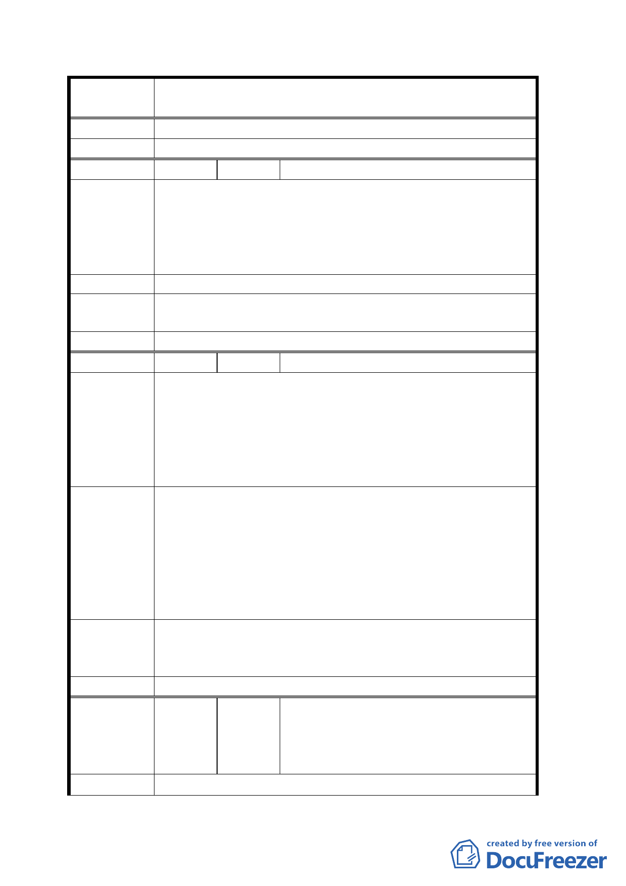

案 名 修訂台北市士林官邸特定商業區細部計畫案
論 加之以其他容積獎勵方式處理。
委員會決議 同專案小組審查結論。
編 號 4 陳情人 許邱玉雲
一、特定商業區容積率可以到 400％，225％太少
二、徵收 600 坪都沒有補償費，就必須提高容積率
陳 情 理 由 三、增加容積率對政府並沒有損失（原訂 225％，本人要
求 360％，差額才增加 145％，等於本人 600 坪的土地
才多換 125％容積率）
建 議 辦 法 容積率 360％，才要接受
專案小組結 有關本計畫案容積相關規定，同意維持原基本容積 225％，
論 加之以其他容積獎勵方式處理。
委員會決議 同專案小組審查結論。
編 號 5 陳情人 游偉德
一、變更後特定商業區土地減少 7％，嚴重損害地主權益
及市府公信力。
陳情理由
二、發還土地比例不足，市府未依主要計畫及區段徵收法
令行事，無法昭信於民。
三、建築基地地籍分割線未按原規劃臨中山北路側及福林
路側之臨路長度比例分割，顯然無法昭信於民。
一、中山北路側原有四米多的綠蔭人行步道，加上建築法
規定八米退縮，已有 12 米人行步道可規劃優質人行空
間。
建 議 辦 法 建議變更計畫綠地 5％為特定商業區，方可維護市府公
權力，考量地主權益。
二、建議提高容積率，彌補市府規劃錯誤及地主權益。
三、建議按原臨長度比例重新檢討分割。
專案小組結
論
一、有關本計畫案容積相關規定，同意維持原基本容積 225
％，加之以其他容積獎勵方式處理。
二、有關地籍分割請地政處妥為處理。
委員會決議 同專案小組審查結論。
曹永勝、曹永順、曹永章、曹月琴、曹
編
號6
陳情人
永川、 黃葉素麵、李曉音、曹永春、
廖偉盛、廖偉志、廖永隆、邱耀文、葉
明傳、葉明華、曹秋桂、曹吉勇
陳 情 理 由 對 台 北 市 政 府 於 民 國 94 年 1 月 14 日 府 都 規 字 第
六